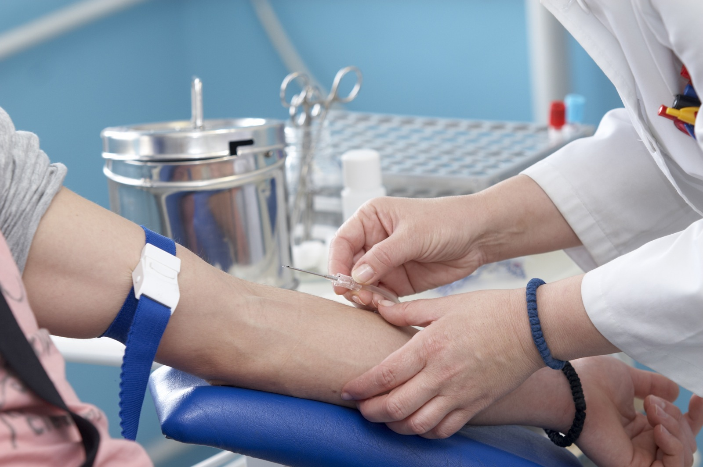
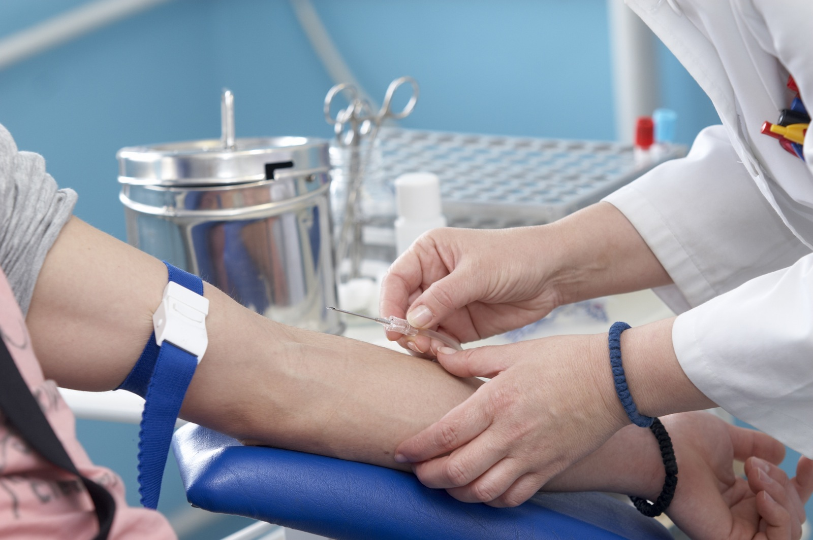
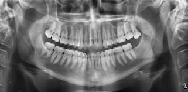

Medicina în secolul al XX-lea şi în prezent
Caracteristica este combaterea efectiva a bolilor infectioase prin vaccinari in masa, introducerea antibioticelor, prin masuri sanitare si imbunatatirea conditiilor de viata.
Tratamentul medicamentos specific cu substante chimice al bolilor infectioase a inceput in Germania cu lucrarile lui Paul Erlich (1854 - 1915). In 1932 Gerhard Domagk (1895 - 1964) descopera sulfamidele iar in 1928 in Anglia Alexander Fleming (1881 - 1955) constata actiunea bacteriostatica a ciupercii Penicillium, din care biochimistul Howard Florey (1898 - 1968) extrage Penicillina in forma pura, initiindu-se astfel era antibioticelor.
Progrese importante au fost facute in domeniul geneticii, descoperindu-se modul de transmitere a caracterelor, structura cromozomilor si rolul genelor precum si structura chimica a acidului dezoxiribonucleic (ADN), suportul fizic al informatiei genetice.
Dupa ce se cunosteau deja anticorpii serici ca factori esentiali in mecanismele de aparare ale organismului, in a doua jumatate a secolului al XX-lea se pune in evidenta rolul diverselor limfocite in imunitatea celulara si producerea de anticorpi.
La inceputul secolului XX, Clemens von Pirquet introduce in medicina termenul de alergie. Studiul stiintific al bolilor alergice, inceput de Pirquet, va continua in decursul secolului XX, odata cu cresterea prevalentei bolilor alergice in populatie, ducand la dezvoltarea unui nou domeniu al medicinii, numit astazi Alergologie si imunologie clinica.
Ca metode de investigatie sunt de mentionat introducerea Tomografiei computerizate, a Tomografiei de Rezonanta Magnetica Nucleara si a examenelor cu Ultrasunete.
În domeniul chirurgiei, transplantele de organe (in 1967 chirurgul sud-african Christian Barnard efectueaza primul transplant de inima) dau sperante de supravietuire multor bolnavi altfel incurabili.
Dupa ce Charles Sherrington (1857 - 1952) efectuase studii fundamentale asupra functionarii sistemului nervos, canadianul Wilder Penfield (1891 - 1976) cerceteaza functiile scoartei cerebrale prin stimulari directe ale suprafetei creierului in timpul unor interventii chirurgicale. Dezvoltarea Neurochirurgiei se datoreaza in special americanilor Harvey Cushing (1869 - 1939) si Walter Dandy (1886 - 1946).
Cardiologia a facut progrese diagnostice prin aplicarea unor metode ca angiografia, cateterismul cardiac iar pe plan terapeutic prin implantarea de pace-maker, operatiile by-pass in obstructiile coronariene, operatii in afectiuni valvulare, medicamentele beta-blocante, dar si prin cunoasterea si adoptarea masurilor de combatere a factorilor de risc (fumatul, obezitatea, sedentarismul, hipertensiunea arteriala, nivelul ridicat de colesterol). Cancerul ramane mai departe o problema dificila, dar citostaticele s-au dovedit eficiente in unele forme, ca leucemia si altele.
British Medical Journal, una dintre cele mai cunoscute publicati de medicina din intreaga lume, a realizat la inceputul acestui an un sondaj de opinie privind cele mai mari descoperiri medicale din intreaga lume, de dupa anul lansarii jurnalului, 1840.
Dintr-o lista initiala de peste 100 de nominalizari facuta de cititorii jurnalului, in mare parte medici si cercetatori, un grup de experti a nominalizat 15 descoperiri majore din lumea medicala. Persoane din intreaga lume pot vota una dintre aceste descoperiri, in perioada 5-14 ianuarie 2007.
Aceste descoperiri au salvat milioane de vieti si au curmat suferinte incomensurabile.
Fiecare dintre cele 15 descoperiri este sustinuta de cate un expert al lumii medicale care sa expuna meritele respectivei descoperiri, de la cel care a descoperit pilula contraceptiva moderna la autorul unei carti despre intreaga istorie a penicilinei.
-
Anestezia
Un stomatolog din Boston a utilizat pentru prima data eterul in 1846 pentru a curma suferinta pacientului sau. De atunci, anestezia a devenit obisnuita in toate operatiile.
-
Antibioticele
Alexander Fleming, un bacteriolog englez, a descoperit penicilina in 1928 intamplator in laboratorul sau. In 1945 Fleming a primit Premiul Nobel pentru aceasta descoperire.
-
Clorpromazina
Descoperita in 1952, aceasta substanta a fost primul medicament antipsihotic. A fost folosit pentru tratarea bolilor psihice ca halucinatiile, ostilitatea sau deziluziile. Dezvoltarea acestui medicament a adus o noua intelegere a bolilor psihice.
-
Computerele

De la inregistrarile medicale si pana la asigurari, computerele au fost folosite in medicina de la inceputul anilor 1960. Medicii pot accesa informatii despre medicamente noi, despre noi studii, pot tine evidenta pacientilor.
-
Structura ADN-ului
Oamenii de stiinta James Watson si Francis Crick au prezentat spirala AND-ului, molecula care pastreaza informatia genetica, in 1953, iar in 1962 au castigat pentru aceasta descoperire Premiul Nobel.
-
Medicina bazata pe dovezi
 

Asa cum sugereaza si numele, medicina bazata pe dovezi implica utilizarea datelor deja existente pentru a lua decizii in ceea ce priveste noile cazuri medicale. Termenul si conceptul au fost introduse in anii '90.
-
Teoria germenilor
Spre sfarsitul anilor 1800, Louis Pasteur a fost primul care sugerat ca bolile pot fi provocate de microorganisme.
-
Imunologia
Istoria imunologiei a inceput in 1798, cand Edward Jenner a descoperit ca oamenii pot capata imunitate impotriva varsatului de vant. Au urmat numeroase alte descoperiri care au ajutat si la intelegerea alergiilor si anticorpilor.
-
Imaginile medicale
Razele X au fost descoperite tot accidental, in 1895. De atunci, domeniul s-a extins, ajungandu-se la tomografia computerizata, emisia positronica, rezonanta magnetica, ultrasunetele.
-
Pilula contraceptiva
De cand a ajuns in farmaciile din Statele Unite, pilula contraceptiva a fost privita ca o minune. Corect administrata, aceasta are efectele scontate in proportie de 99%.
-
Terapia de rehidratare orala
Asa cum spune si numele, aceasta terapie inseamna administrarea fluidelor pe cale orala pentru a compensa pierderile de apa din organism. Aceasta a fost raportata pentru prima data in 1964. Acum ocupa un loc de baza in tratarea pacientilor cu holera, diaree acuta sau alte boli din aceasta categorie.
-
Riscurile fumatului
Primul raport despre legatura dintre fumat si cancerul la plamani a fost publicat chiar in British Medical Journal in 1950. De atunci, se estimeaza ca tutunul omoara 440.000 de americani in fiecare an.
-
Salubritatea
Importanta apei curate pentru baut a fost sustinuta inca din anii 1800, cand s-a facut legatura intre diverse boli si apa impura. Totusi, si azi, milioane de oameni nu au acces la apa potabila.
-
Proba de cultura
Tinerea unei culturi de tesuturi in laborator si cresterea acesteia a fost descoperita in 1907, dar a durat pana in anii 1950 ca sa devina un instrument important pentru investigatoa clinica.
-
Vaccinurile
Vaccinurile ajuta la prevenirea unei largi varietati de boli, de la poliomielita pana la pojar. Primul vaccin a fost cel descoperit de Edward Jenner contra variolei in 1796.